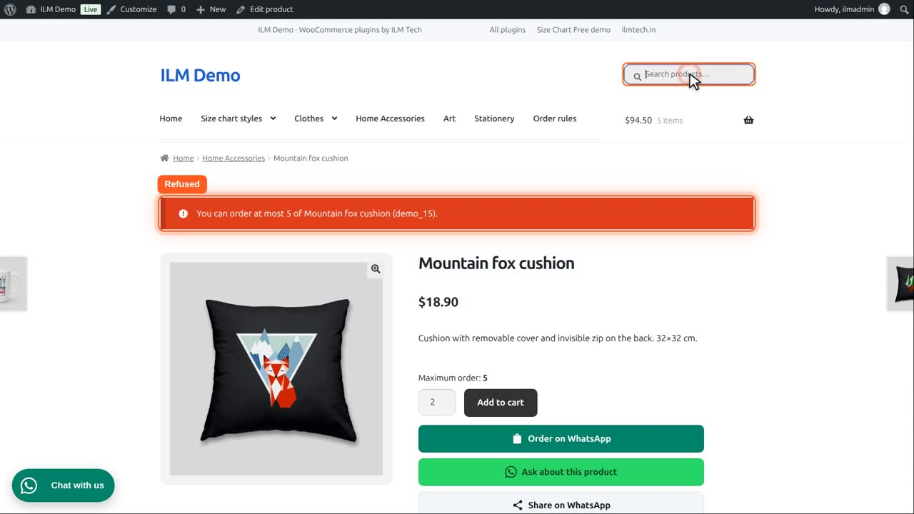
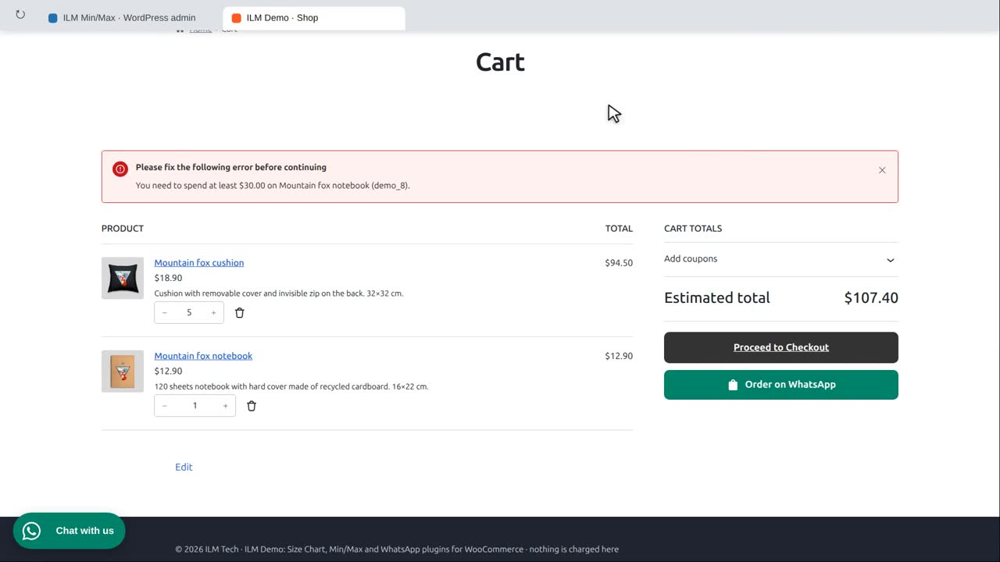
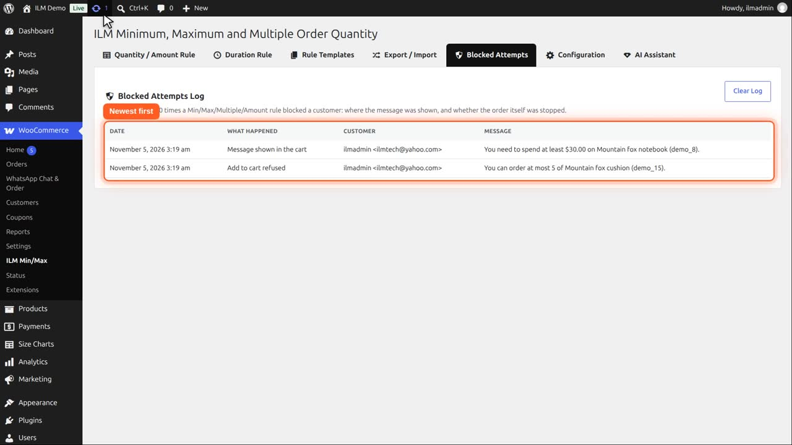
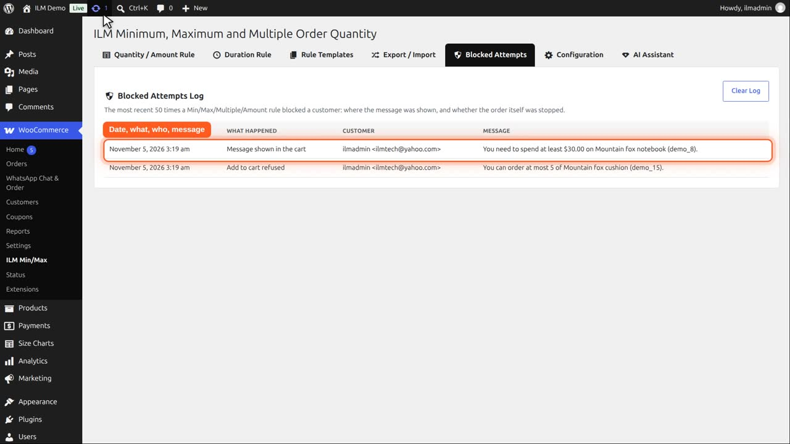
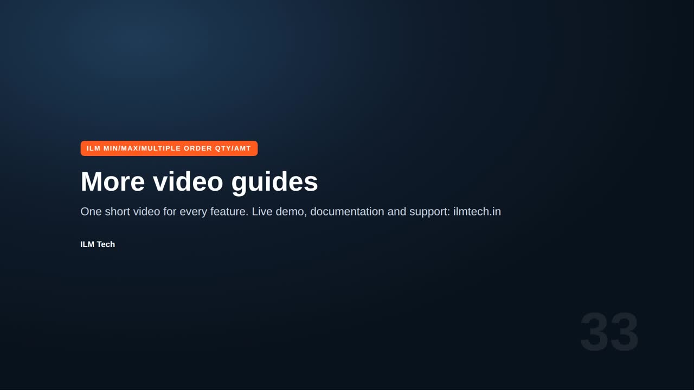

Pro add-on. This feature needs the Pro add-on. See Free and Pro.
A log of the last 50 times a rule stopped a customer, newest first. Each line shows the Date, What happened, the Customer and the exact Message they saw. Use Clear Log to empty it.
What happened is one of: Message shown in the cart, Add to cart refused, Quantity change refused or Checkout stopped.
A customer has five Mountain fox cushions in the cart, where the maximum is five, and tries to add two more. The shop refuses.

Then they add one notebook, below its minimum amount, and the cart shows the message.

On the Blocked Attempts tab, the attempts are listed, newest first. It keeps the last fifty.

Each line shows the date, what happened, the customer, and the exact message they saw. What happened tells you whether a message was shown, or whether adding to cart or the order itself was stopped.

Clear Log empties the list when you no longer need it.
